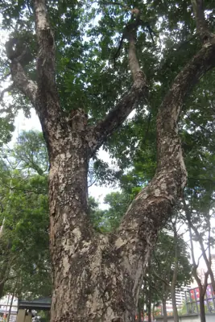

pranet · 出典付きの植物図鑑
ヴォイの木
Syzygium nervosum DC. · Myrtaceae

Syzygium nervosum is a species of tree native to tropical Asia and Australia, extending as far north as Guangdong and Guangxi in China and as far south as the Northern Territory of Australia. It was previously known as Cleistocalyx operculatus, C. nervosum, and Eugenia operculata, and it has many other synonyms. It is a medium-sized tree of about 10 meters in height with pale brown bark and dull green leaves.
出典: Wikipedia (en): Syzygium nervosum · CC BY-SA 4.0
異名: Calyptranthes costata Buch.-Ham. ex Wall., Calyptranthes cuneata Buch.-Ham. ex Wall., Calyptranthes grandis Buch.-Ham. ex Wall., Calyptranthes makul Blanco, Calyptranthes mangiferifolia Hance ex Walp., Calyptranthes tatna Buch.-Ham. ex Wall., Calyptranthes zuzygium Blanco, Cleistocalyx cerasoides (Roxb.) I.M.Turner, Cleistocalyx nervosum (DC.) Kosterm., Cleistocalyx nervosus (A.Cunn. ex DC.) Kosterm., Cleistocalyx operculatus (Roxb.) Merr. & L.M.Perry, Eugenia cerasoides Roxb., Eugenia clausa C.B.Rob., Eugenia divaricato-cymosa Hayata, Eugenia gigantea Ridl., Eugenia holtzeana F.Muell., Eugenia holtzei F.Muell., Eugenia holtziana F.Muell., Eugenia nervosa (A.Cunn. ex DC.) Bedd., Eugenia operculata Roxb.
同定や利用は自己責任でお願いします。この図鑑だけを根拠に野生の植物を食べないでください。
出典
- 学名: World Flora Online Plant List 2026-06 · CC0 1.0
- 名前: Wikipedia の記事名と Wikidata · CC0 1.0（Wikidata）。記事名は事実
- 説明: Wikipedia (en): Syzygium nervosum · CC BY-SA 4.0
- 食用・毒性: World Checklist of Useful Plant Species (Diazgranados et al. 2020, RBG Kew) · CC BY 4.0
- 分布: World Checklist of Vascular Plants (WCVP), RBG Kew, version 2026-06-04 · CC BY 3.0
このページは pranet のデータから自動生成しています。コードは MIT、データは項目ごとのライセンス（説明）。